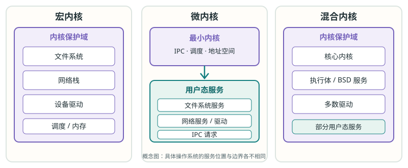

内核架构的核心问题不是“代码有多少行”，而是哪些机制和服务运行在高特权级、哪些服务被放进独立的保护域，以及组件之间如何通信。把文件系统、网络栈和驱动放在一个内核地址空间，通常能缩短调用路径；把它们拆成用户态服务，则可能建立更清晰的故障边界，但会引入 IPC、调度和资源管理成本。

一、宏内核（Monolithic Kernel）
宏内核把许多核心服务放在同一个内核特权域中。进程管理、内存管理、文件系统、网络协议栈和大量设备驱动可以在内核空间内通过函数调用和共享数据结构协作。
1. Linux 的组织方式
Linux 通常被归类为宏内核，同时支持可加载内核模块。模块让驱动和部分功能能够按需装载，但模块代码仍然运行在内核特权域，不能因此获得与独立用户进程相同的内存保护边界。一次文件读取可能经过 VFS、具体文件系统、页缓存、块层和设备驱动；是否真的访问物理设备，取决于缓存状态、文件类型和 I/O 路径。
2. 取舍
| 收益 | 代价与风险 |
|---|---|
| 内核内部组件可以直接调用，数据结构共享方便 | 接口耦合和共享状态需要严格维护 |
| 避免为每个内核内部服务都跨越用户/内核 IPC 边界 | 内核态代码错误可能破坏整个内核的状态 |
| 成熟驱动和子系统可以共享内核基础设施 | 内核攻击面较大，模块质量和配置安全很重要 |
“宏内核一定比微内核快”是过度简化。性能取决于实际工作负载、IPC 实现、缓存行为、驱动路径和调度策略；宏内核的直接调用路径是一种潜在优势，而不是对所有场景的性能证明。
二、微内核（Microkernel）
微内核试图把高特权级内核缩小到一组基础机制，例如线程调度、地址空间管理、IPC 和必要的中断/资源管理机制。文件系统、网络服务或设备驱动可以作为独立的用户态服务运行，并通过 IPC 与其他组件交互。不同微内核的服务边界并不完全相同；有些驱动或特定功能仍可能放在内核态。
1. 服务边界与故障隔离
假设文件系统服务发生崩溃：若它运行在独立保护域中，系统可能能够检测服务故障并重启该服务，而不必让整个内核一起崩溃。但能否恢复取决于协议状态、驱动位置、内核机制和系统设计；“微内核中任何驱动崩溃都不会影响系统”并不成立。
2. seL4 的形式化验证
seL4 官方 FAQ将其形式化验证描述为：在明确的证明假设下，内核 C 实现符合形式化规格，并进一步证明某些完整性与机密性性质。它不等于“整个设备没有 bug”。硬件行为、引导代码、内核配置、DMA 设备和规格本身都属于证明边界的一部分；FAQ 也明确讨论了这些假设。
3. IPC 的成本需要实测
服务拆分会增加消息传递、调度和数据复制等潜在成本，但不能用“每次 IPC 固定两次上下文切换”或“必然慢若干倍”来概括。共享内存、快速路径、批量请求和内核调度实现都会影响成本。正确比较方法是明确服务调用路径，再在相同硬件和工作负载下测量。
三、混合内核（Hybrid Kernel）
“混合内核”是常用的架构分类词，但边界并没有一个所有教材都一致的严格定义。分析系统时，更可靠的做法是指出哪些子系统运行在内核态、哪些驱动可以运行在用户态、组件之间通过什么机制通信，而不是只贴标签。
1. Windows NT
Windows NT 系列内核包含内核（kernel）、执行体（executive）、对象管理、内存管理、I/O 管理和设备驱动等组件。多数传统内核驱动运行在内核模式；Windows 也提供 UMDF 等用户模式驱动框架，让符合条件的驱动在用户模式运行。因而“Windows 所有驱动都在内核态”不准确，“Windows 是微内核”也不能仅凭组件名称得出。
2. macOS XNU
Apple 的公开 XNU 源码仓库将 XNU 描述为结合 Mach、FreeBSD 组件和 IOKit 的混合内核。Mach 子系统、BSD 子系统和驱动框架在内核工程中协同工作；不能把它简化成“Mach 在内核、BSD 和驱动都在用户态”。
比较架构时的检查清单：保护域在哪里？服务之间如何通信？驱动崩溃的故障范围是什么？共享数据如何同步？系统怎样恢复失败的服务？
四、Unikernel与Library OS
Library OS 把一组操作系统服务以库的形式与应用组合；Unikernel 则常把应用与所需的 OS 功能构建成面向特定虚拟机或硬件环境的单一镜像。它们不是“把 Linux 压缩成一个文件”这么简单，而是改变了应用与操作系统服务的部署和隔离方式。
| 维度 | 通用操作系统 | Unikernel / Library OS 常见取向 |
|---|---|---|
| 部署单元 | 通用 OS 环境承载多个进程和服务 | 针对单个应用或有限工作负载构建专用镜像 |
| 服务组成 | 由系统提供广泛的通用接口 | 只组合应用需要的服务子集 |
| 隔离方式 | 进程、用户/内核边界、容器或虚拟机 | 通常依赖虚拟机/Hypervisor 边界；镜像内部模型因实现而异 |
| 工程挑战 | 通用性、兼容性和系统管理 | 调试、观测、驱动适配、更新与多租户运维 |
Unikernel 并不保证启动时间一定是某个毫秒数，也不意味着所有实现都没有线程或系统调用语义。Firecracker 是轻量级虚拟机监控器（microVM VMM），不应简单归类为 Unikernel。讨论具体项目时，必须区分 VMM、Guest OS 和应用镜像。
五、结语与下一章预告
宏内核、微内核、混合内核和 Unikernel 并不是“性能、速度、安全”的简单排行榜。它们把代码放进不同的保护域，并在调用成本、故障隔离、验证难度和运维复杂度之间做权衡。下一章将聚焦这个设计决策的硬件基础：用户态和内核态如何通过特权级与系统调用入口隔开。
本章自测 · 从概念走向验证
对一次文件读取画出宏内核与微内核的服务路径，并标注保护域、通信方式和可能的故障边界。
查看思考提示
不要预设每次 IPC 固定触发几次上下文切换；说明具体实现依赖哪些假设。